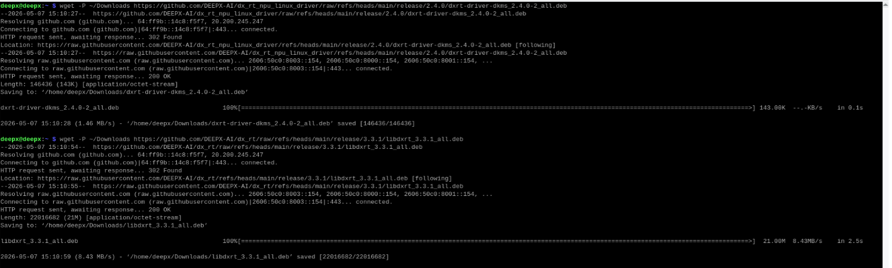
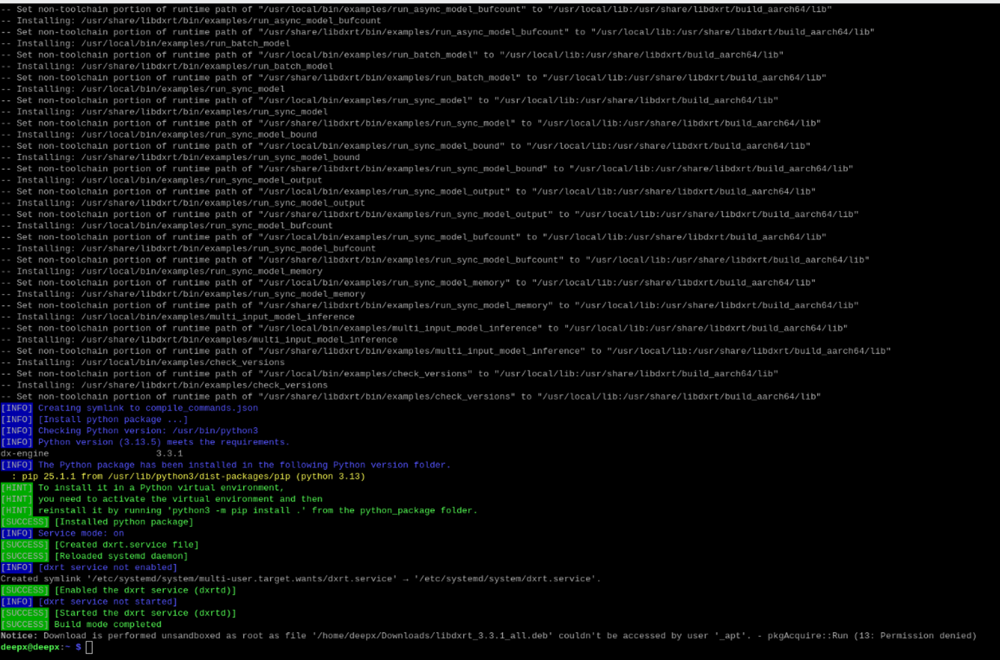
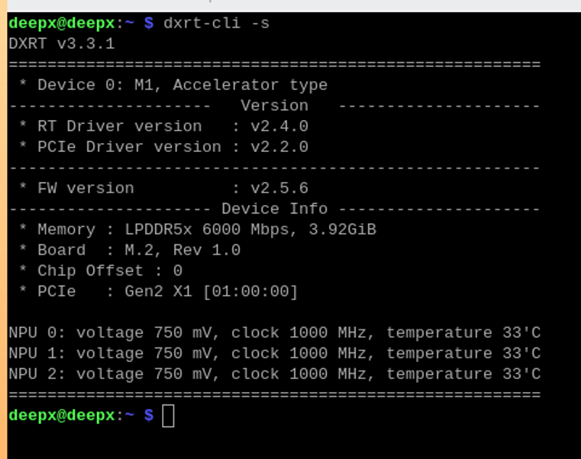
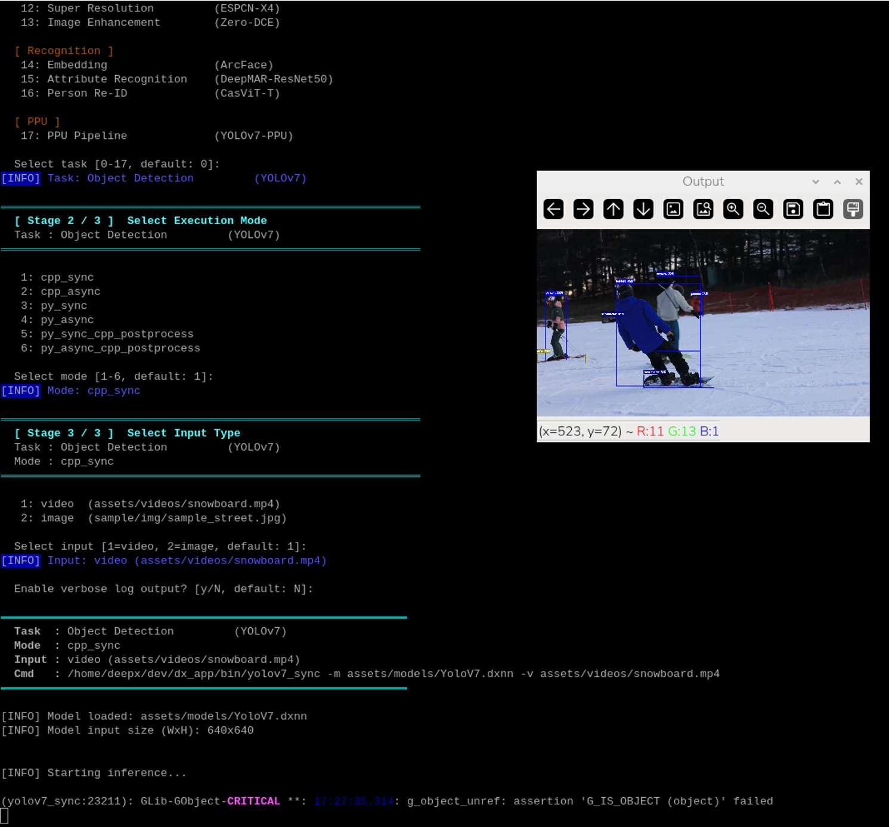
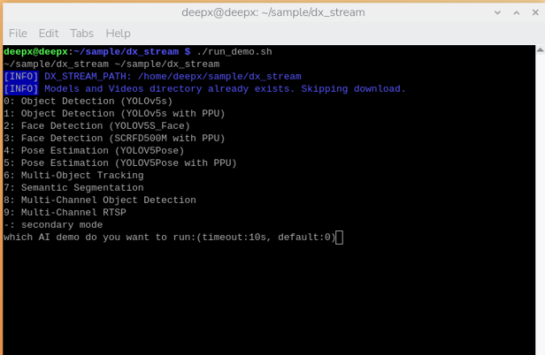
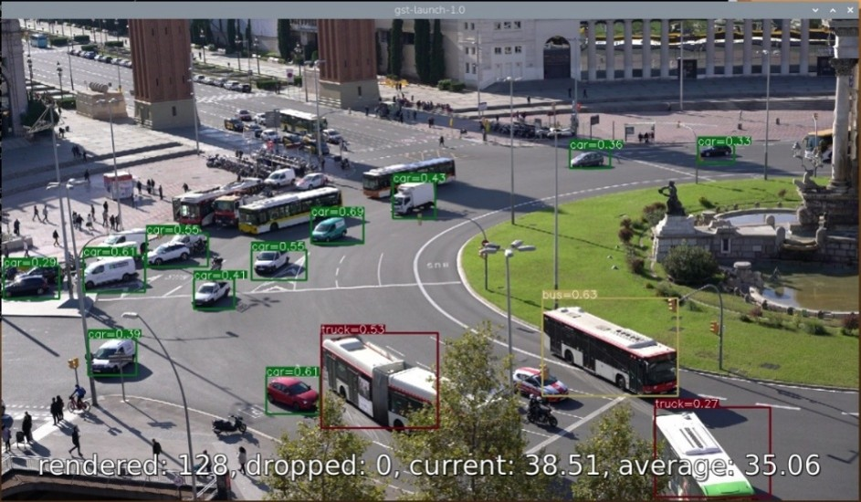
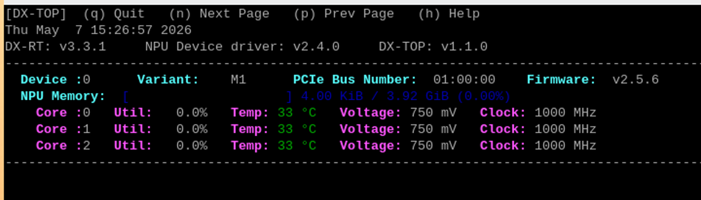

Getting Started
This chapter provides a concise guide to configuring the DEEPX DX-M1 development environment. It covers the essential steps from verifying system requirements to executing your first AI inference benchmarks. It assumes the DX-M1 M.2 module has already been physically installed as described in System Overview.
System Prerequisites¶
Before proceeding with the driver installation, ensure the host system is properly configured by following these environment preparation steps.
Environment Preparation¶
Step 1. Install Raspberry Pi OS
- If you have not already done so in System Overview, download and install the OS using the Raspberry Pi Imager.
- Link: https://www.raspberrypi.com/software/
Step 2. Connect to the Internet
- Verify that the Raspberry Pi has an active Internet connection.
- A stable connection is required to access external repositories and download necessary dependencies during the setup process.
Software Setup and Demo Execution¶
This section provides a brief guide to installing the necessary drivers and executing AI inference benchmarks using the DX-M1 accelerator.
Install DEEPX M1 Driver and Runtime¶
Follow these steps to configure the official repository and install the DEEPX Runtime (DXRT) library, known as libdxrt, along with the necessary driver modules.
Step 1. Download the debian package
Execute the following commands to download latest debian package.
# Download debian package to Download folder
$ wget -P ~/Downloads https://github.com/DEEPX-AI/dx_rt/raw/refs/heads/main/release/3.3.2/libdxrt_3.3.2_all.deb
$ wget -P ~/Downloads https://github.com/DEEPX-AI/dx_rt_npu_linux_driver/raw/refs/heads/main/release/2.4.0/dxrt-driver-dkms_2.4.0-2_all.deb

Figure. Download Debian Package
Step 2. Installation of DXRT and Driver
Install the DEEPX Runtime (DXRT) library and the NPU driver.
$ sudo apt install -y ~/Downloads/dxrt-driver-dkms_2.4.0-2_all.deb
$ sudo apt install -y ~/Downloads/libdxrt_3.3.2_all.deb

Figure. Runtime Library (`libdxrt`) Installation Progress
Step 3. Hardware Status Verification
Confirm that the DX-M1 module is correctly interfaced and recognized by the system.

Figure. Hardware Verification using `dxrt-cli -s` Command
Optional: Firmware Update¶
To ensure full compatibility between the libdxrt library and the hardware, the device firmware must meet the minimum version requirements.
Prerequisites for Update
Perform a firmware update if any of the following conditions occur.
- Version Mismatch: The current firmware version is lower than the minimum requirement.
- Execution Error: A
[dxrt-exception] Invalid Operationerror occurs during model execution.
Firmware Download
The latest firmware binaries and guides are available at the official DEEPX GitHub repository.
- URL: https://github.com/DEEPX-AI/dx_fw
Quick Update Procedure
After downloading the firmware, execute the following commands.
# Step 1. Stop service
$ systemctl stop dxrt.service
# Step 2. Update firmware
$ dxrt-cli -u <path_to_fw_bin>
# Step 3. Restart service
$ systemctl start dxrt.service
CAUTION
Do not power off the device during the update to prevent permanent hardware damage.
Execution of Sample Applications¶
AI Inference Demo (dx_app)
The dx_app demonstrates real-time AI inference capabilities. The execution script automatically handles the acquisition of sample video assets and pre-compiled models.
$ mkdir ~/sample
$ cd ~/sample
$ git clone --recurse-submodules https://github.com/DEEPX-AI/dx_app.git
$ cd dx_app
$ ./install.sh --all
$ ./run_demo.sh

Figure. `dx_app` Demo Output: Terminal Performance Summary (top) and Real-time Object Detection Result (bottom)
GStreamer Plugin Demo (dx_stream)
The dx_stream sample is optimized for high-performance video streaming pipelines utilizing the GStreamer framework.
$ cd ~/sample
$ git clone --recurse-submodules https://github.com/DEEPX-AI/dx_stream.git
$ cd dx_stream
$ ./install.sh
$ ./build.sh
$ ./run_demo.sh


Figure. `dx_stream` GStreamer Pipeline: Plugin menu selection (top) and multi-object detection result (bottom)
System Monitoring¶
NPU Utilization (dxtop)
The dxtop utility provides a real-time CLI (Command Line Interface) to monitor NPU utilization, temperature, and operational status.

Figure. Real-time NPU Resource Monitoring via `dxtop`
PCIe Gen3 Configuration¶
To maximize the throughput of the DX-M1 accelerator, it is recommended to manually force the interface to PCIe Gen3.
Manual Configuration via config.txt
This method involves editing the system configuration file to enforce Gen3 speeds manually.
Step 1. Open the configuration file
NOTE
In older versions of the OS, the path may be /boot/config.txt
Step 2. Add or modify the PCIe parameters
# Enable the PCIe external connector (M.2 HAT)
dtparam=pciex1
# Force PCIe Gen3 speed (Required for 25 TOPS performance)
dtparam=pciex1_gen=3
Step 3. Save and Exit
Press Ctrl + O, then Enter to save the changes, and Press Ctrl + X to exit the editor.
Step 4. Reboot the system
Verification of PCIe Link Speed
After rebooting, you can verify if the PCIe Gen3 configuration has been applied correctly by checking the Link Status.
- If the output shows Speed 8GT/s, the system is successfully operating at PCIe Gen3 speeds.
- If the output shows Speed 5GT/s, it is operating at PCIe Gen2.
NOTE
To achieve the maximum AI performance of 25 TOPS, the link speed must be confirmed as 8GT/s.
If you run into errors during setup, see Appendix. Troubleshooting.